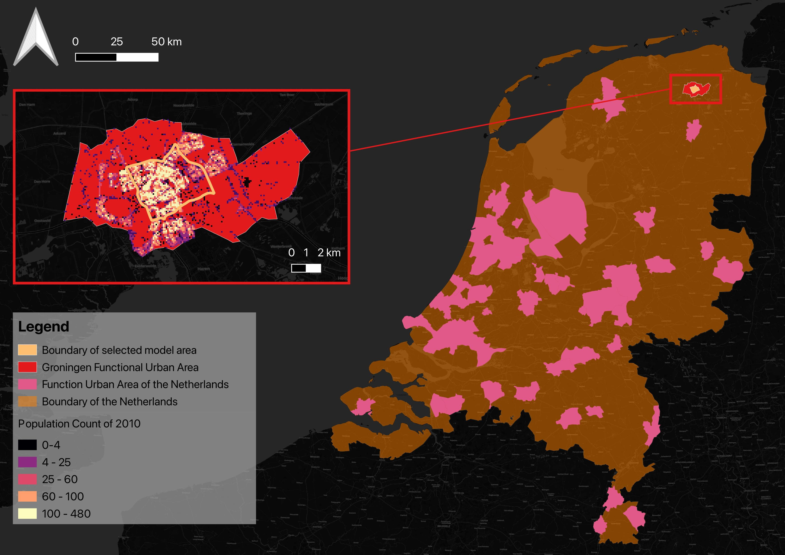
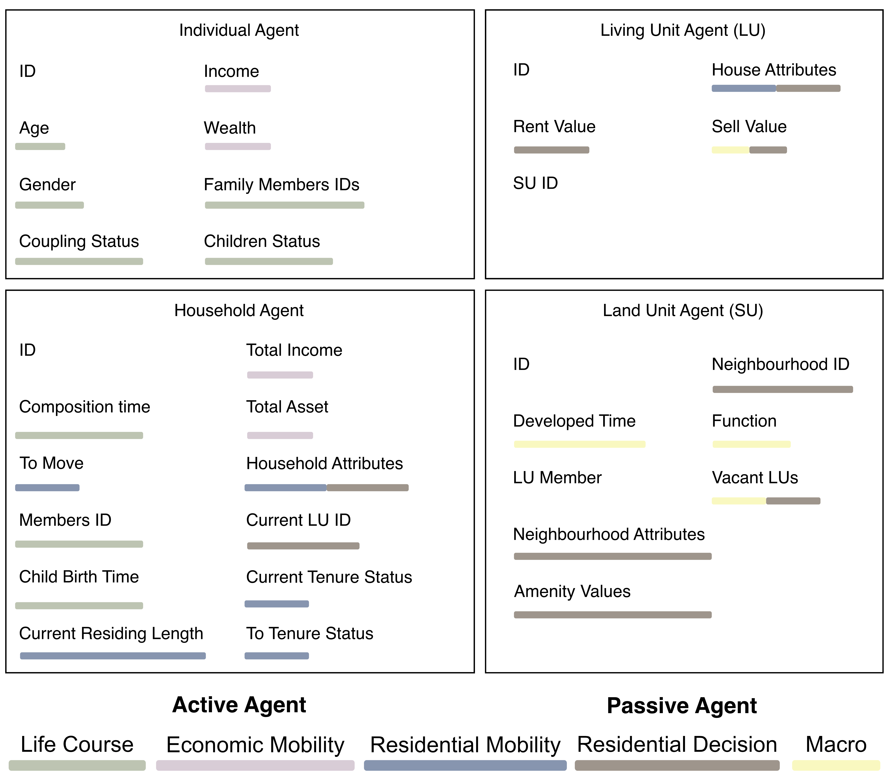

layout: true <div class="my-footer"> <img src="../imgs/TUBK_Logo_ URBA.svg" alt> </div> --- class: top, center <!-- background-image: url(/imgs/background.gif) --> <!-- Slide 01: Title Page --> Go and No Go: <br> # **A**gent-**B**ased **M**odelling # of **U**rban **E**conomic **S**egregation # In the Netherlands <br> Bayi Li Date: February 2024 <br> PhD Promotors: Prof. Dr. Maarten van Ham, Prof. Dr. Tatiana Filatova Co-promotor: Dr. Clémentine Cottineau ??? (30s) Good morning, thanks for coming to my go and no go presentation here and online. So today I will present my current progress and the plan for the next three years. The supervision team includes Professor Maarten, Tatiana, and Clémentine. The topic of my research is agent-based modelling of urban economic segregation in the Netherlands. --- <!-- Slide 02: Define the targeted social phenomenon --> ## What is Urban Economic Segregation? The uneven distribution of groups with **different economic status** across **residential neighbourhoods** of a city or an urban region (adapted from Van Ham et al. (2021)). <div class="summary-footer">A complex and multi-faceted issue of Urban Economic Segregation</div> <div class="probar-footer"> <div class="bar-light-grey"> <div class="bar-grey" style="width:3%"></div> </div> </div> ??? (50s) To study urban economic segregation, we fist need to define the term first. We see urban economic segregation as the uneven distribution of groups with different economic status across residential neighbourhoods of a city or an urban region. -- ## Multi-faceted issue of Urban Economic Segregation - Residential Why do people choose to live where they live? - Economic What drove the people's economic status change over time? ??? (1m'10s) Therefore, the phenomenon can basically interpreted as two facets: residential and economic. So two related fundamental questions are: 1. Why do people choose to live where they live? 2. How the their economic status change over time? -- ## Complexity of Urban Economic Segregation A complex interplay of family, housing, financial and labour market factors, influenced by local circumstances. ??? (1m'30s) Regarding the two question and the complex theory, urban economic segregation can be described by interconnected networks of households, being effected by a complex interplay of family, housing, financial and labour market factors, and influenced by local circumstances. --- <!-- Slide 03: Introduce of agent-based approach --> ## Generative Method > Epstein (2006): If you didn't grow it, you didn't explain it emergence. A computational simulation that emerges the pattern of economic segregation based on the designated mechanisms and their interplay. <div class="summary-footer">ABM, a prominent generative approach, provides a powerful framework for studying complex systems</div> <div class="probar-footer"> <div class="bar-light-grey"> <div class="bar-grey" style="width:10%"></div> </div> </div> ??? (1m'50s) Generative approach is used to understand and explain urban economic segregation in this complexity. In this sense, the target is to grow the pattern of urban economic segregation in a computational simulation from designated framework. -- .right[.image-70[]] ## Agent-Based Modelling It generates the urban economic segregation through **autonomous residential and economic decisions, and local interactions of heterogeneous agents**. > A method to address complex social phenomena by searching for **causal mechanisms** that exhibit generative power of target social phenomena (Epstein 2006, Hedström 2005). ??? (2m'10s) Specifically, we are using agent-based modelling to describe complex behaviours as a generative process from bottom up to the collective segregation pattern. ABMs are a bottom-up approach of generative modelling where **heterogenous entities** make autonomous decisions of actions, based on their evolution and that of other entities. Agent-based models allow us to capture aspects of systems (such as emergent properties, which arise from the interaction of many agents) that conventional modelling does not permit. It is capable of searching for causal mechanism that exhibit generative power of urban economic segregation. --- <!-- Slide 04: The overview of the ABM's theoretical framework --> # Overview ## Overarching Research Question **How can agent-based modelling help us understand the crucial mechanisms which drove urban economic segregation happened in the Netherlands?** <div class="summary-footer">Aim is to identify the crucial mechanisms and to capture the complex interplay by ABM</div> <div class="probar-footer"> <div class="bar-light-grey"> <div class="bar-grey" style="width:15%"></div> </div> </div> ??? The overall research question to ask in the project, therefore, is formulated as how can agent-based modelling help us understand the crucial mechanisms which drove urban economic segregation happened in the Netherlands? -- ## Overall Research Aim **Build an agent-based model, involving the main mechanisms of urban economic segregation and their interplays, to simulate the evolution of residential pattern in the Dutch cities.** ??? Hence, the aim is to build an agent-based model, involving the main mechanisms of urban economic segregation and their interplays, to simulate the evolution of residential pattern in the Dutch cities. --- <!-- Slide 05: Sub aims and outcomes (1) --> ## Sub aims and outcomes <!-- ## Sub aims and outcomes -->  **Aim 1**: Investigate the current knowledge basis of constructing an agent-based model of segregation and their theoretical basis **Paper 1**: Review of mechanisms and process design in agent-based models of urban economic segregation <div class="summary-footer">Understanding and building the conceptual framework.</div> <div class="probar-footer"> <div class="bar-light-grey"> <div class="bar-grey" style="width:20%"></div> </div> </div> ??? Four sub amis was further divided to address different aspects. The first one is to investigate the current knowledge basis of constructing an agent-based model of segregation and their theoretical basis. It corresponds to the paper 1, which is a integrated review of theoretical works and agent-based models of segregation. --- <!-- Slide 05: Sub aims and outcomes (2) --> ## Sub aims and outcomes <!-- ## Sub aims and outcomes -->  **Aim 2**: Develop a single city ABM to explain the segregation landscape in the case study **Paper 2**: Simulating the evolution of urban economic segregation pattern using agent-based modelling: case study of Groningen, the Netherlands <div class="summary-footer">A single city ABM of urban economic segregation</div> <div class="probar-footer"> <div class="bar-light-grey"> <div class="bar-grey" style="width:20%"></div> </div> </div> ??? In the second one, we will select one city as an example to build our single-city model to deliver a local test of the model in city of Groningen. --- <!-- Slide 05: Sub aims and outcomes (3) --> ## Sub aims and outcomes <!-- ## Sub aims and outcomes -->  **Aim 3**: Develop a national scale ABM to explain the segregation pattern at multi-level scale in the Netherlands during 2011-2023 **Paper 3**: A national scale simulation on urban economic segregation in the Netherlands <div class="summary-footer"> A national model of urban economic segregation.</div> <div class="probar-footer"> <div class="bar-light-grey"> <div class="bar-grey" style="width:20%"></div> </div> </div> ??? Then, we will upscale the model to national scale, at this phase, we will conduct a national scale simulation. --- <!-- Slide 05: Sub aims and outcomes (4) --> ## Sub aims and outcomes <!-- ## Sub aims and outcomes -->  **Aim 4**: Explore the potential of scenario modelling in the policy optimisation to tackle urban economic segregation in the Netherlands **Paper 4**: Scenario agent-based simulations of mitigating strategies on urban economic segregation in the Netherlands <div class="summary-footer"> Varying the scenarios to evaluate policy strategies.</div> <div class="probar-footer"> <div class="bar-light-grey"> <div class="bar-grey" style="width:20%"></div> </div> </div> ??? The last one will be extending the validated national scale baseline model to a multi policy scenario simulations. Thus, we aims to explore the potential of scenario modelling in the policy optimisation to mitigate urban economic segregation in the Netherlands. --- ### The current progress and future time management .image-85[] <div class="summary-footer">We have nearly finished the SLR, and are working on the single city model</div> <div class="probar-footer"> <div class="bar-light-grey"> <div class="bar-grey" style="width:20%"></div> </div> </div> --- ## Generative Mechanism and Empirically Grounded ABMs .image-60[] Large scale empirically grounded agent-based models are not sufficiently address the issue of segregation, let alone in the context of the Netherlands. <div class="summary-footer">Empirically grounded ABMs are still in need to address generative realism.</div> <div class="probar-footer"> <div class="bar-light-grey"> <div class="bar-grey" style="width:25%"></div> </div> </div> --- ## Review of ABM of UES .image-60[] Large scale empirically grounded agent-based models are not sufficiently address the issue of segregation, let alone in the context of the Netherlands. <div class="summary-footer">Empirically grounded ABMs are still in need to address generative realism.</div> <div class="probar-footer"> <div class="bar-light-grey"> <div class="bar-grey" style="width:25%"></div> </div> </div> --- ## Review of ABM of UES ### Other observation - The interplay between mechanisms were largely overlooked - Overly reliance on assumptions with hypothetical parameter set without empirical support - We need better ways of populating such models with realistic agent behaviours. - We has no sufficient scientific and engineering methodology for calibrating and validating such model. - There is a need of large ABMs to address the multi-scale of urban economic segregation. <div class="summary-footer">Empirically grounded ABMs are still in need to address generative realism.</div> <div class="probar-footer"> <div class="bar-light-grey"> <div class="bar-grey" style="width:25%"></div> </div> </div> ??? In addition, we have other observations on the former ABMs of segregation: - Single mechanism still dominant the literature, which means, the interplay between mechanisms were largely overlooked - There are huge amount of abstract ABMs. Among them, overly reliance on assumptions with hypothetical parameter set without empirical support - We need better ways of populating such models with realistic agent behaviours - Calibration, validation and robustness analysis are not well conducted, even in empirically grounded ABMs. We has no sufficient scientific and engineering methodology for calibrating and validating such model. - There is rarely large ABM that discuss segregation at multiple scale. Let alone in the context of the Netherlands. --- .image-60[.right[]] ## Mechanisms and processes <div class="summary-footer">There are 4 main steps to build the model</div> <div class="probar-footer"> <div class="bar-light-grey"> <div class="bar-grey" style="width:25%"></div> </div> </div> --- ## Model Building Processes .image-80[] <div class="summary-footer">There are 4 main steps to build the model</div> <div class="probar-footer"> <div class="bar-light-grey"> <div class="bar-grey" style="width:25%"></div> </div> </div> ??? (50s) There are 4 main steps to build the model: The initialisation is to create the initial entities, environment layer, and the interaction rules. After initial test, the calibration is to find an optimal parameter set to generate the observed pattern. Then, a validation test to find the fitness of the generated outputs against empirical observation and robustness of the model. The first three steps, basically, same for the phase 2 and 3 but with different scale. Lastly, parameter variation will be conducted in the last paper on the validated baseline model from phase 3. --- <!-- Slide: Data driven ABMs --> ## Empirically Grounded Model with Micordata .image-80[] Datasource: Microdata from Statistics Netherlands (CBS) <div class="summary-footer">Data is deeply integrated with the model</div> <div class="probar-footer"> <div class="bar-light-grey"> <div class="bar-grey" style="width:25%"></div> </div> </div> ??? (30s) In this project, we will use the microdata from CBS to power the model. The application of such granular data, not usually accessible in other countries, can significantly contribute to a meaningful population creation of large ABM. We can also see that the data will be deeply integrated into different procedures of model building. Including interaction rule initiation, calibration and validation. --- Combined with spatial data - Synthetic reconstruction of population To attach attributes are as close to the real population as it is possible with privacy characteristics randomised. - Possible directly initialising the model by using the integrated HPC by CBS ??? --- <!-- Slide 06: The entities of the ABM --> .right[.image-100[]] ## Basic Elements of ABM ### Entities In ABM, there are typically two layers of entities: the actor layer and the environment layer: - Actors In the model, the entity is individual which forms the unit of housing decision, **household** <div class="summary-footer">Household, composed by individuals, is the decision unit</div> <div class="probar-footer"> <div class="bar-light-grey"> <div class="bar-grey" style="width:25%"></div> </div> </div> --- <!-- Slide 06: The entities of the ABM --> .right[.image-100[]] ## Basic Elements of ABM ### Entities In ABM, there are typically two layers of entities: the actor layer and the environment layer: - Actors In the model, the entity is individual which forms the unit of housing decision, **household** - Environment **Land unit** and **living unit** are the the passive agents that constitutes the environment layer. <div class="summary-footer">Spatial units and individual units constitute the environment layer</div> <div class="probar-footer"> <div class="bar-light-grey"> <div class="bar-grey" style="width:25%"></div> </div> </div> --- <!-- About Agent-Based Modelling: Rules and interactions --> ## Main components and their interactions .image-70[] <!-- .caption[.center[Main components and their interactions]] --> There are **5 main components** categorised by major theoretical expositions of residential economic segregation: - They contain mechanisms that regulate the corresponding activities of agents - They effect intermediate variables or generate signals <div class="summary-footer"> The mechanisms regulates .</div> <div class="probar-footer"> <div class="bar-light-grey"> <div class="bar-grey" style="width:25%"></div> </div> </div> ??? The household make their residential decision, the residence location change can impact the social network change and the economic states. Residential mobility is well-modelled due to its relevance in wide range of social phenomena. Economic mobility is less modelled, especially in spatial contexts. --- <!-- Prototype Model design --> ## Modular Modelling and Building Blocks ### Multi-scale and multi-level modelling architecture.  <br> A collection of interconnected modules, each responsible for specific processes. The city can be conceptualised as a distinct sub-system. ??? --- ## Tentative Mechanisms and Incremental Modelling .image-50[] A collection of interconnected modules, each responsible for specific processes. The city can be conceptualised as a distinct sub-system. --- ## Tentative Mechanisms and Incremental Modelling <!-- .right[] --> .image-50[] A collection of interconnected modules, each responsible for specific processes. The city can be conceptualised as a distinct sub-system. --- ## Tentative Mechanisms and Incremental Modelling <!-- .right[] --> .image-50[] A collection of interconnected modules, each responsible for specific processes. The city can be conceptualised as a distinct sub-system. --- <!-- The life course component --> ## Synthetic Household Population and their life course ### Heterogeneity of Households .right[ .caption[.center[Example of life trajectory, events and impact on household characteristics.]]] - The role of life course component - Described by probability, driven by summarised Statistics - Described by mathematical process (e.g., Markov, Bayesian approach) - Fundamental stages and essential micro life events <div class="summary-footer"> The mechanisms regulates .</div> <div class="probar-footer"> <div class="bar-light-grey"> <div class="bar-grey" style="width:25%"></div> </div> </div> ??? --- --- ## Target Simulated Outputs A streamlined yet robust baseline model: a model contains essential mechanisms that can generate reliable and consistent results of urban economic segregation. Specifically, the results to check: ### Statistical Measurements Rank-Order Information Theory Index (ROITI)<sup>a</sup> ### Spatial Measurements - Maps of household residences with their respective economic states attached - clustering (local Moran's I) and concentration (global Moran's I) ### Additional key variables - Volume of moves - Statistical distribution of economic attributes .note[*Notes: <sup>a</sup>: a measure on ranks of economic attributes and more sensitive to the residential concentration of poverty or affluence*] <div class="summary-footer"> The mechanisms regulates .</div> <div class="probar-footer"> <div class="bar-light-grey"> <div class="bar-grey" style="width:25%"></div> </div> </div> ??? At each simulation cycle, the model produces a map of household residences with their respective economic states attached. Additionally, the spatial aspects of segregation are calculated using land units to ensure consistency in measurement at the microspatial level across different cities. Tentative measurements include clustering (local Moran's I) and concentration (global Moran's I). In this context, the areas of spatial concentration of poor and affluent can be compared to observed patterns of concentration. --- ## Scenario modelling --- <!-- Prototype Model design --> ## Paper 02 ### Prototype Model design on Case Model of Groningen .image-40[] .caption[.center[Figure. The case of Groningen and its population density.]] The [Functional Urban Areas (FUA)<sup>a</sup>](https://www.oecd.org/cfe/regionaldevelopment/functional-urban-areas.htm) of Groningen. The population of FUA of Groningen is <u>194, 340</u> in 2011 census, aggregated to around <u>80, 000</u> households. .note[*Notes: <sup>a</sup>: each of FUA consists of a densely inhabited city and of a surrounding area (commuting zone)*] --- <!-- Prototype Model design --> ## Paper 02 ### Glimpse of Modelling Interface and Entities <div class="row"> <div class="column">  </div> <div class="column">  </div> </div> --- ## Overall challenges ### Diversity of individuals Without the diversity of individuals, the model might fail to capture endogenous dynamics of the main actors. ### The balance between the complexity and the simplicity of the model The more elements and the more detailed the behaviour and interaction rules, the larger the model needs to be and the longer the simulation will take. ### The interpretability of the model As the intercorrelation between different mechanisms, the impact of each mechanism is difficult to be isolated. Sensitivity analysis and modelling them in building block will be the key to address this issue. --- # Open Access .right[ .caption[.center[Today's slides]]] - A simplified version of the model will be hosted online for public engagement. - All codes will be open access alongside with the publications to support scientific reproducibility. - The ongoing project progress will be updated regularly on SEGUE website: <u>www.erc-segue.nl</u> - The ABM progress will be updated on my personal website: <u>www.spatialuminous.top/open-review</u> ??? 20s We follows the open science principles: - Firstly, a simplified version of the model will be hosted online for public engagement. - All codes will be open access alongside with the publications to support scientific reproducibility. - The ongoing project progress will be updated regularly on our project website. - The ABM progress will be updated on my personal website, and synced to the project website regularly. --- Questions? --- **Appendix 01: what are our contributions of doing such ABM-UES?** Axelrod and Tesfatsion (2005) points out four goals of ABM: 1. Empirical understanding: seek causal explanations This corresponds to the overall project aim of understanding the crucial mechanisms of economic segregation in the Netherlands. 2. Normative understanding: as laboratories for the discovery of good designs (e.g., policies) This corresponds to our paper 4. 3. Heuristic: this refers to the counterfactual outcomes could be generated from fundamental causal mechanism. Mostly for abstract ABM, not our goal 4. Methodological advancement: To provide the researchers with rigorous tools to conduct controlled computational experiments. This corresponds to our methodological principles such as large scale and modular ABM. --- **Appendix 02: the challenge of large model** > More is Different - The model contains extensive number of agents with a variety of heterogeneity. - The multi mechanisms adopted Modular approach makes it possible to introduce new mechanisms and reduce the non-significant mechanisms. --- **Appendix 03: the potential changing optimal structure over time** We are not considering the change of decision making framework over time. It can explain there were rarely abrupt changes . ??? In our project, the mechanism at certain context was considered as stable over time. Of course, it is because we select the endogenous mechanisms on purpose and deliberately omit unexpected events, etc. For example, three years of pandemics significantly change people's worklocation and threfore, xxxx. We have the temporal variation in mind, and will examine it if any irregularity was observed from the empirical data or simulated outcomes. --- **Appendix 04: the extensive computational cost** 1. We have allocate the resources to computing task on a HPC 2. Given that the aim of the project is to understand urban economic segregation, we will not consider mathematical approaches to reduce the complexity, in paper 2 and 3, for example, machine learning or dimension reduction. However, if time permits, we can explore the mathematically grounded simplification of ABM to balance the potential high computational power increase brought by varying multiple parameter set.